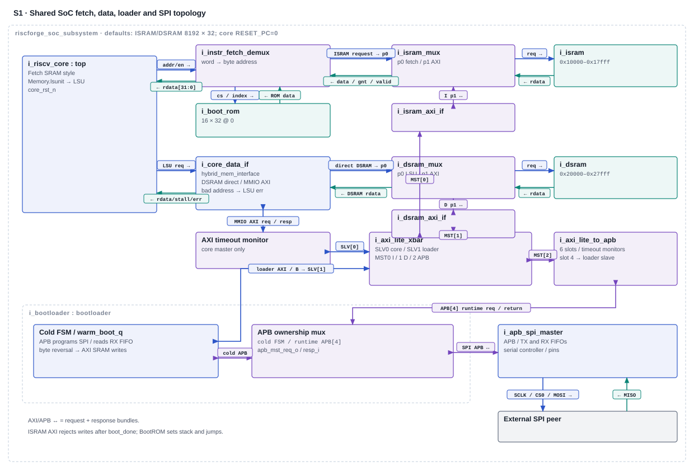

RISCFORGE · CJ review · 2026-11-10 · G5.7 / G6.10
Benchmark and external-SPI boot evidence
Historical results are retained. Current integrated-source workload and cold-SPI qualification remain open.
Documentation review snapshot — not technical signoff. Source/evidence inspection only; no new build, simulation, waveform, score, waiver or checklist change.
1. Criteria and evidence state
G5.7 · Correct workload completion
Original criterion: “Dhrystone and/or CoreMark complete with correct results; score recorded.” VCS is the recorded tool. Historical workload failures and a limited counter-probe PASS exist. Integrated MDU changes have focused evidence; the full workloads still need current-source reruns.
G6.10 · External-SPI execution
Original criterion: “Boot mode pin = 1: code fetched from the SPI flash model and executed.” VCS is the recorded tool. Historical unit copy and staged SoC execution evidence exist. Current cold transfer, SRAM integrity, release, ROM handoff and executed result remain to be qualified.
Criteria come from the historical workbook extraction; this review did not reread or edit the workbook. A fresh read-only comparison found 99 matches and 10 differences against the old 109-file benchmark baseline. The old “109 unchanged” statement describes its historical campaign. See comparison hashes and handback.
Scroll horizontally on small screens, or open scalable original and zoom.


Interface key. Separate teal lines are returns; paired AXI/APB arrows carry request/response bundles. The core-only AXI timeout block is i_axi_lite_timeout_monitor. IMEM uses a 30-bit word address; the demux forms the byte address. MISO returns on spi_sdi1_i. BootROM is 16 × 32 at address zero. APB slot 4 and cold FSM converge in the loader-owned APB mux. The loader owns core, peripheral and SPI reset outputs; the figure labels ownership rather than reset-domain timing. SPI clock/CS/MOSI leave the DUT; MISO returns from outside. Unrelated peripheral internals and reset synchronizers are omitted.
Source key. SoC wiring / maps · Loader / APB ownership · Fetch demux · SRAM mux · AXI SRAM bridge · Data router
Accomplishment / evidence limit. Source inspection establishes connected hardware. 31-Oct unit 1,539-word comparison has unknown commit; 19-Oct staged SoC 52/52 is a distinct bench/source scope. No qualifying current-candidate cold-SPI execution evidence was identified in inspected records. BootROM is a stack setup and jump, not the serial loader. Historical boot unit verdict · Staged boot record
Scroll horizontally on small screens, or open scalable original and zoom.


Interface key. TB deposits target dut.i_isram.u_imem.mem_array and dut.i_dsram.mem; these are backdoors, not buses. The TB drives hard_rst_ni/soft_rst_ni; the loader owns core_rst_n/boot_done_o. Trap taps are dut.i_riscv_core.trap_commit_*, ABI reads are dut.i_dsram.mem[0:63], and timeout taps are the SoC sticky outputs. Dotted return observations include ABI words, trap metadata, WB hold observations and timeout state. Firmware provides workload validation; host analyzer interprets the saved result.
Source key. Benchmark TB · Runner · Analyzer · ABI contract · Build filelist
Accomplishment / evidence limit. The warm-preload harness and guards are implemented. Historical workload failures remain retained; no correct-result current-candidate benchmark or defensible score is established here. MISO=0 gives no SPI boot proof; #16 stays open and no counter correction factor is inferred. Retained workload failures · Benchmark delivery limits
2. Benchmark launch and independent checks
The harness instantiates the actual riscforge_soc_subsystem. It selects warm boot, loads both SRAM arrays directly and releases soft reset. SPI MISO is tied low. Firmware uses RV32IM/Zicsr, ILP32, ISRAM 0x10000 and DSRAM 0x20000, each 32 KiB. The first 256 DSRAM bytes hold the result ABI; static fit does not establish dynamic stack safety.
Expected results come from smoke arithmetic, CoreMark known CRCs and retained duration check, and Dhrystone final-state constants. Firmware checking runs on the DUT; it is not external lockstep. TB/host require RUNNING before terminal status, zero validation errors, no unexpected trap or bus timeout, bounded completion and consistent pass markers/raw records. Process exit zero alone is insufficient.
The historical infrastructure record retains 39 host-test passes and three expected negative guard outcomes. These are infrastructure evidence, not current workload qualification.
3. Historical workload results and current limits
Selected 4 November runs: XSim 2022.2, GCC 13.2.0, modeled 100 MHz, 2,000,000-cycle watchdog. Linked metadata and raw results are indexed in the detailed source. No workload was rerun for this review.
| Workload | Saved observed result | Evidence / limit |
|---|---|---|
| Smoke · 1 | FAIL: 3 errors, code 0x1001; expected sum 2980, observed 1016. No trap. | Analysis · failing baseline retained. |
| Counter probe · 1 | Diagnostic PASS. Raw 38 cycles / 24 unqualified minstret increments; eight-instruction body plus measurement overhead. | Analysis · execution, transport and live reads; no qualified CPI. |
| CoreMark · 1 | Cause 6, PC 0x10fa4, address 0x2092d in initialization. Timing phase 0. | Raw result · no timed completion or CRC validation. |
| Dhrystone · 10 | Cause 5, PC 0x10088, address 0x40231 in numeric formatting. Timing phase 0. | Raw result · loop/final-state validation not established. |
Historical isolation and saved trace findings identify lost MDU completion validity and older-load flush overlaps. Current execute, hazard and multiplier abort logic contain integrated corrections. The retained post-sync development checks cover 13 directed configurations, 131,072 legality combinations plus SYSTEM guards and four ownership/abort checks; SoC Verilator exited zero with 107 warnings using -DXSIM -Wno-fatal. They do not close the original workloads.
Issue #16 remains open; no qualified CPI. MEM/WB holds during memory stalls, retirement input remains valid_W & ~exc_valid_W, and minstret increments each asserted cycle. Historical 82/12/183 held-edge observations are not correction factors. A unique packet-consumption ledger must distinguish a held packet from a new loop iteration at the same PC.
Machine CSR snapshots use high-low-high retries, but cycle/retirement samples occur separately and include overhead; the phase marker is diagnostic. The analyzer keeps published score null and compliance false. No new CPI, CoreMark/MHz, Dhrystones/s or DMIPS is claimed. The one-iteration CoreMark image retains upstream's 10-second minimum-duration error; do not remove it to obtain a pass. The clock is modeled, not silicon Fmax. The JALR-mask allegation #17 was withdrawn.
4. External flash → executed result
Loader APB reads capture FIFO data on an access-phase/PREADY edge, then privileged AXI writes traverse crossbar input 1 and the SRAM bridge/mux. Instruction words go to ISRAM, followed by configured data words to DSRAM. Default chunk limit is 1024 words; actual lengths/overrides must be recorded. Reset release precedes S_DONE; boot_done is true in that state. The ROM image sets sp=0x28000 and jumps to 0x10000. Cold boot loads SRAM before execution; it is not execute-in-place.
Bootpin approval gap: the inspected top/loader expose no boot-mode pin; cold/warm reset selects loading versus retention. Legacy fetch_enable_i/boot_addr_i ports do not satisfy the original bootpin=1 criterion. The verbal record supplies no per-item scope, approver or date for this alternative or tool acceptance. Do not infer either departure approved.
5. Historical boot evidence
| Identity | Inspected observation | Qualification limit |
|---|---|---|
| 31 Oct · BOOT-01 Unit 1,539 words | Log: 375 instruction + 1164 data words match golden image; repeat cold boot, warm retention and APB status. Verdict: PASSED. | Selected manifest uses SPI/vendor flash and unit memory, no CPU/SoC fabric. Unit bases differ from the SoC. No ROM jump/execution proof; commit unknown. |
| 18 Oct · SoC 36 checks | Log: eight loaded words, cold reset ordering, SPI activity and warm retention after flash poison. | Historical copy/reset evidence; not an independent executed-result proof or current-source qualification. |
| 19 Oct · SoC 52/52 | Final log: real flash/SPI, 11 ISRAM + 4 data words, release, first x2 write, ROM handoff, Timer0 readback/counting, committed result 1, sentinels and park PC 0x10028. | Staged XSim-compatible bench/filelist. Manifest and staged bench retain provenance; not current-source proof. |
The 52/52 bench independently compares image words, captures the first stack-pointer write before payload reuse, and checks a program-derived DSRAM result. The PC reached the final loop before the store committed; the final log records a three-cycle store wait. Preserve the earlier time-unit failure and early-sampling failure. Removing --override_timeunit restored the vendor flash power-up timing; a staged bench change waited separately for the result commit. Its final log retains an imem.hex warning. See run explanation and boot record. Warm-preload reports establish no external transfer.
6. Proposed qualification sequence — not run
- Freeze candidate and acceptance: source/configuration/image hashes, active manifests, simulator, bootpin departure and score scope. CJ owns stimulus, independent expectations and closure.
- Rebuild provenance and check smoke: preserve old inputs/results, inspect new filelists/preflight, then run smoke and full workloads against unchanged arithmetic/CRC/final-state expectations.
- Qualify retirement and timing: reproduce #16, distinguish unique consumption from held WB, include loops, stalls, MDU and kill/trap boundaries; identify counter-read overhead before CPI claims. Review functional fixes separately.
- Qualify real cold SPI: preload the external flash model, not payload SRAM; check serial transfer, FIFO acceptance, byte order, AXI writes, SRAM integrity, reset release, ROM first instruction, SRAM fetch and an independent committed result. Check warm retention separately.
- Retain evidence: exact commands, tool identity, source/image hashes, validation/traps/timeouts and negative outcomes. A plan, compiled design or focused PASS is not workload or boot closure.
Commands remain source-bound. The wrapper and runner define the actual interface. Build/All select iterations; Run uses existing metadata. CheckSources checks vendored pins. Do not promise that old baseline Run commands pass preflight after sync. Preflight checks firmware/port/tool/output provenance; HDL fingerprints are recorded separately, not checked against every old design-baseline entry. Inspect/rebuild instead of bypassing mismatches. No validated current cold-SPI launch command is claimed; reconcile the current bench/model/filelist before execution.
Learning checkpoint: identify the event separating a held WB packet from a new instruction at the same PC, then trace one flash word through the FIFO, byte reversal, SRAM write, ROM handoff and program effect. Explain which observations warm preload bypasses.